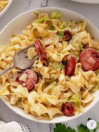

Haluski

Description
Haluski is simple Eastern European comfort food. Main ingredients are egg noodles, fried cabbage, and usually some kind of pork, whether that be bacon,
kielbasa, pancetta, or prosciutto. I tend to use prosciutto myself :)
Ingredients
- 1 head of cabbage
- 1/2 yellow onion
- Butter
- 8 oz. prosciutto
- Salt
- Pepper
- 1 lb. egg noodles
- 5 oz. crumbled goat cheese
Steps
- Heat a little olive oil in a pan
over medium heat and add prosciutto.
Cook for a few minutes until prosciutto
is a little crispy.
-
Add onions and butter.
Cook a few minutes.
-
Add cabbage, more butter, salt,
and pepper. Fry until cabbage is tender.
-
Cook the noodles while the cabbage cooks
and drain.
-
Add drained noodles to the cabbage
mixture. Stir.
-
Add cheese as well as salt and pepper to taste.